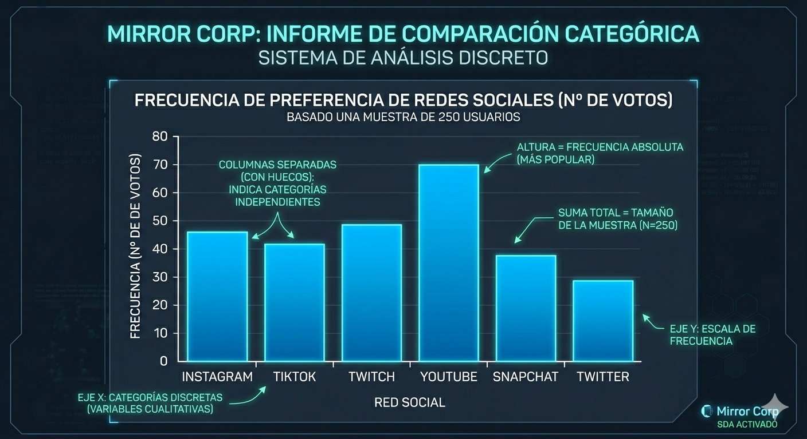

Introducción
📊 El Radar de Categorías
Mientras que otros gráficos se pierden en cálculos complejos, el Diagrama de Barras es pura potencia visual. Es el estándar de oro para comparar categorías independientes (variables cualitativas) o valores numéricos aislados.
En Mirror Corp lo usamos para detectar qué usuario destaca sobre el resto: cada barra es un competidor y su altura es su frecuencia. Si una barra dobla a la otra, la conclusión es inmediata, sin necesidad de escanear hojas de cálculo infinitas.
🚀 TRUCO DE ANALISTA: Úsalo para responder la pregunta de oro: ¿Quién manda en el mercado hoy?
Definición
El Diagrama de Barras es la representación gráfica definitiva para variables cualitativas (categorías) o discretas (números aislados). En lugar de cajas, aquí usamos columnas cuya altura es el reflejo exacto de la frecuencia.
Eje X (Horizontal): Situamos las categorías o modalidades (ej. tipos de contenido: Reels, Fotos, Historias).
Eje Y (Vertical): Marcamos la frecuencia absoluta. Cuanto más alta es la barra, más veces se repite ese dato.
Independencia Visual: A diferencia del histograma, las barras van separadas. Esto indica que cada categoría es un "mundo" distinto.
💡 Visión de Analista: Es el gráfico perfecto para responder: "¿Cuál es el favorito del público?". La barra más alta no solo es un dato, es el ganador de la métrica.
